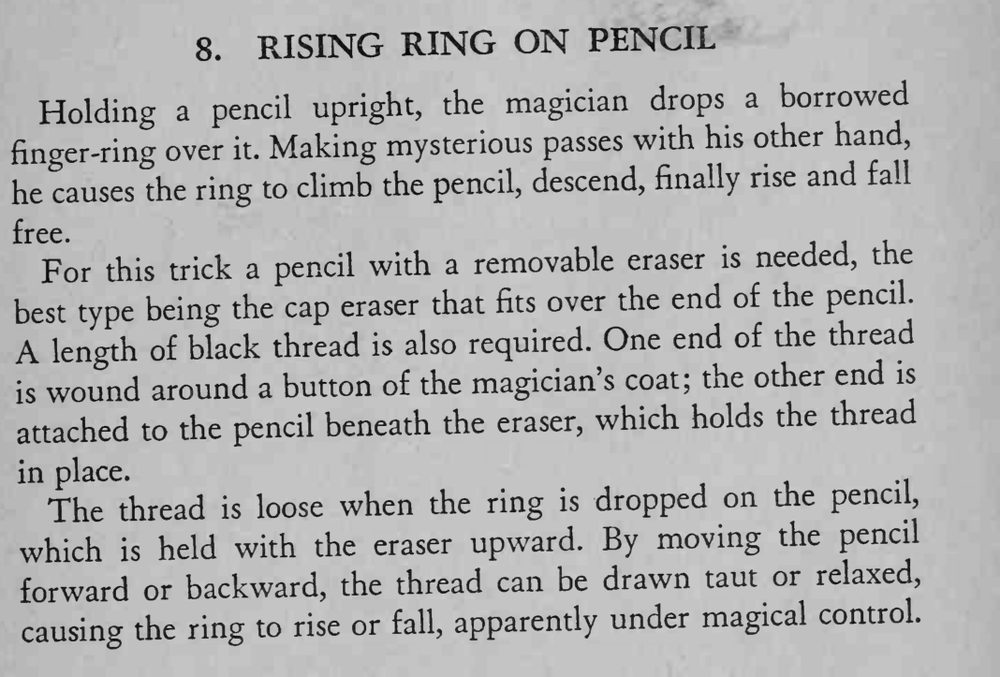

戒指套在铅笔上，魔术师空手在一旁比划，戒指便沿着铅笔缓缓上升、下降。
线要细、颜色贴近笔杆，升降幅度小一些反而更可信。

Holding a pencil upright, the magician drops a borrowed over Making mysterious passes with his other hand, finger-ring it. he causes the ring to climb the pencil, descend, finally rise and fall For this trick a pencil with a removable eraser is needed, the best type being the cap eraser that fits over the end of the pencil. A length of black thread is also required. One end of the thread wound around a button of the magician's coat; the other end is attached to the pencil beneath the eraser, which holds the thread in place. The thread loose when the ring is dropped on the pencil, which held with the eraser upward. By moving the pencil forward or backward, the thread can be drawn taut or relaxed, causing the ring to rise or fall, apparently under magical control.